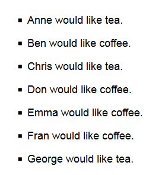

Javascript Array Exercises
Exercise 1: Array operations
Starting with the first array assigned to variable toolArray, write Javascript snippets that convert the array toolArray from each shown value to the next. To try these out, use the console. To submit, place the code in a file called arrays.js.
- ['jigsaw', 'hammer', 'pliers', 'hacksaw', 'spanner', 'screwdriver']
- ['jigsaw', 'hammer', 'pliers', 'hacksaw', 'spanner', 'screwdriver', 'level']
- ['jigsaw', 'hammer', 'pliers', 'hacksaw', 'spanner']
- ['hacksaw', 'hammer', 'jigsaw', 'pliers', 'spanner']
- ['spanner', 'pliers', 'jigsaw', 'hammer', 'hacksaw']
- ['spanner', 'pliers', 'plane', 'hammer', 'hacksaw']
- ['spanner', 'plane', 'hammer', 'hacksaw']
Exercise 2: Arrays and strings
Copy the following HTML code into the body of a skeleton HTML file:
<p><label for="names-input">Names:</label> <input id="names-input" type="text" size=70></p> <p><label for="tc-input">Tea/coffee:</label> <input id="tc-input" type="text"></p> <button type="button" onclick="makeTCOrderListFromInputs();">Make order list from inputs</button> <ul id="order-list"></ul>
Include the file arrays.js (created for exercise 1) in the HTML file using a script element.
In the Javascript file, write the function makeTCOrderListFromInputs, so that it
- reads the two inputs, assuming that
- the first (id 'names-input') contains a list of names separated by spaces
- the second (id 'tc-input') contains a string consisting of the letters 'T' and 'C'
- the number of names in the first input is the same as the number of letters in the second
- splits the string containing the names into a Javascript array of names
- writes into the HTML unordered list element (id 'order-list') entries like the ones shown on the right
- the entries are based on the input names, each associated by position with a T or a C in the other input ('T' meaning tea and 'C' meaning coffee)
A video of sample expected behaviour can be found here.